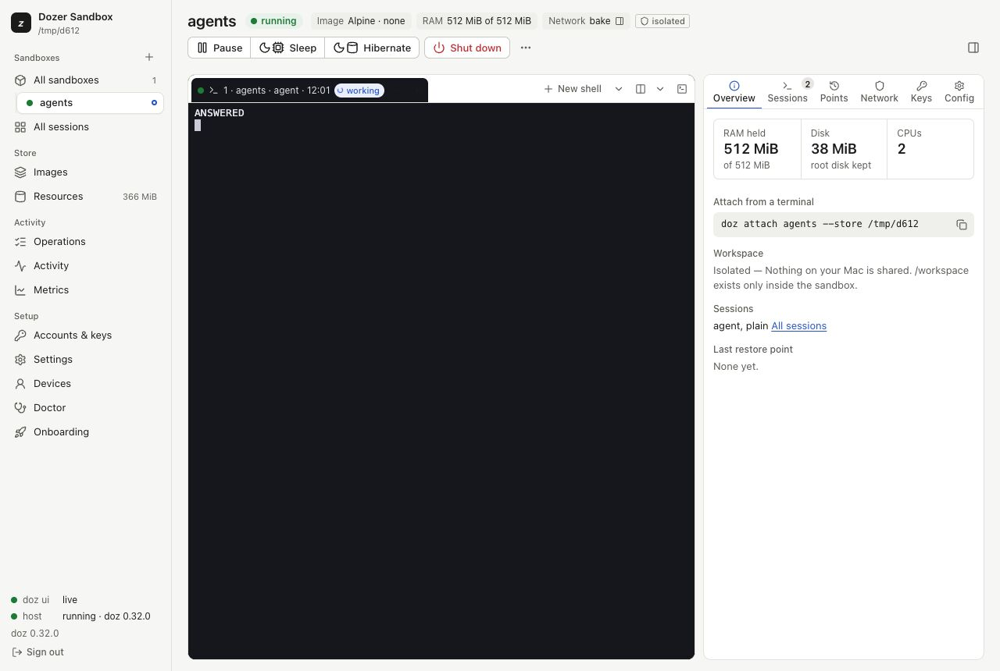

Introducing Dozer Sandbox
Fast, resumable, secure Linux sandboxes for AI coding agents on your Mac — free and open source. Here's what it is, why it exists, and how to try it in a minute.
Coding agents are at their best when you stop approving every command. They're at their most worrying then too: the agent can read your files, run anything, and reach any site, all with your keys in its environment.
Dozer Sandbox gives each agent its own small Linux computer on your Mac, so you can let it work.
What a sandbox is#
Each sandbox is a small Linux virtual machine with one project folder from your Mac inside it, at /workspace. Run Claude Code, Codex or pi in it with the permission prompts off: the VM is the boundary.
- Fast. A sandbox starts in about a third of a second and pauses in a millisecond.
- Resumable. Put it to sleep and it gives its memory back. Wake it and every program is still running where you left it, mid-sentence.
- Secure. The network goes through a policy you can read, and your API keys never go inside: the agent sees a placeholder, and the real key is added on your Mac on the way out.

Try it#
You need a Mac with Apple silicon and macOS 26 or later, and Homebrew.
brew trust --tap dozer-sandbox/tap
brew install dozer-sandbox/tap/doz
doz uiThe dashboard opens on a short setup wizard: it checks your Mac, asks how your agent should sign in, and prepares an image. Then New sandbox and you're in. Prefer the terminal? doz onboard, then doz up in a project folder.
Free and open source#
Dozer Sandbox is free, and its source is on GitHub.
This blog is where news, early access and tips will appear. They're also sent by email to anyone who signs up for them. Thanks for reading, and for trying it.